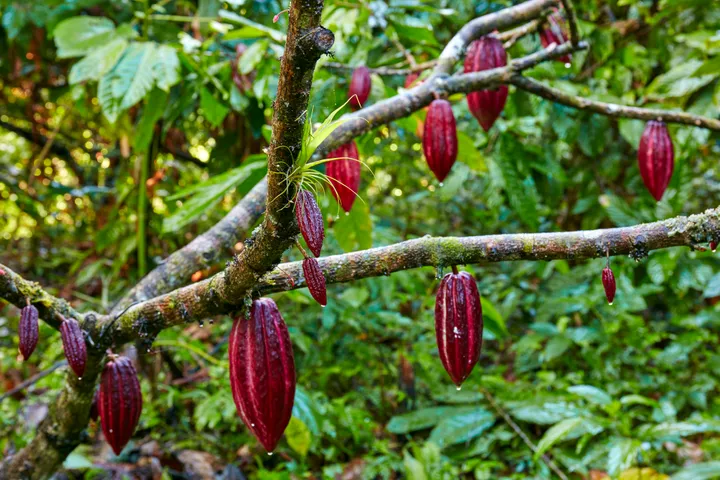

What is BEYCO
Get a BEYCO Account
The First Independent Coffee & Cocoa Trading Platform
In Partnership with Progreso Foundation · Uganda
BEYCO is both a web-based and mobile digital traceability platform developed by the Progreso Foundation and implemented in partnership with Ngite Space Limited in Uganda to support producer organisations, exporters and other stakeholders.
It digitises the coffee and cocoa value chains at an affordable cost. It is the first independent digital coffee and cocoa trading platform that allows farmers and producer organisations to have full ownership over their data.
BEYCO uses Blockchain technology to empower supply chain parties — creating a future where every bean contributes to a better world.
Supported value chains:
Coffee
Arabica & Robusta · Kasese, Bundibugyo
Cocoa
Fine Flavour Cocoa · Western Uganda
Get a BEYCO Account